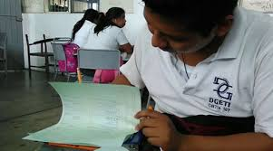

Objetivos de las Especialidades
Contabilidad
Perfil de la carrera:
Esta especialidad forma profesionales capaces de registrar, analizar y controlar información financiera en empresas públicas y privadas. Los estudiantes aprenden a manejar sistemas contables, interpretar leyes fiscales y tomar decisiones financieras con base en datos reales. Módulos de formación profesional:- Identifica el proceso contable
- Maneja el proceso contable
- Opera técnicas contables
- Calcula obligaciones fiscales
- Aplica competencias profesionales en estadía
Habilidades que desarrolla el estudiante:
- Registro de operaciones contables en sistemas manuales y electrónicos
- Elaboración de estados financieros
- Cálculo de impuestos para personas físicas y morales
- Apoyo en auditorías internas y externas
- Uso de software contable y hojas de cálculo
Campo laboral:
Los egresados pueden trabajar en áreas de contabilidad, finanzas, tesorería, auditoría o administración en empresas, instituciones gubernamentales o despachos contables. También pueden emprender su propio negocio o continuar estudios universitarios en áreas económico-administrativas.Perfil de ingreso ideal:
Se recomienda tener gusto por los números, habilidades de análisis, conocimientos básicos en matemáticas y economía, y disposición para el trabajo en equipo.- Preparar estados financieros
- Gestionar presupuestos
- Analizar recursos
